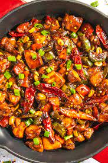

Homepage
How to make Kungpao chicken?
Description
kung pao chicken is a highly addictive stir-fried chicken with the perfect combination of salty, sweet and spicy flavour!

Ingredients
- Chicken broth or stock
- Light Soy
- Dark Soy
- Hoisin sauce
- Chinese black vinegar
- Chinese white wine
Instructions
- Combine all ingredients for the chicken in a shallow bowl; cover and marinate for 10 minutes (if time allows).
- Whisk sauce ingredients together until sugar dissolves; set aside.
- Heat a large skillet, pan or wok over high heat. Add 2 tablespoons of cooking oil, allow to heat up, then add marinated chicken. Fry chicken for 3-4 minutes while occasionally stirring, until edges are browned. Remove from heat and set aside.
- Add remaining cooking oil into the same pan/wok. Stir in garlic, ginger, chili diced peppers (capsicums) and Sichuan peppercorns and stir fry for 1 minute.
- Give the prepared sauce a mix, then pour it into the pan and bring it to a boil while stirring.
- Once it begins to thicken slightly, add chicken back into the pan/wok and mix all of the ingredients through the sauce until the chicken is evenly coated and sauce has thickened, (about 2 minutes).
- Stir in green onions, peanuts and sesame oil. Toss well and continue to cook for a further 2 minutes to infuse all of the flavours together.
- Serve immediately with steamed/cooked rice or fried rice!